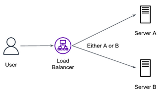

Networking - HTTP - multichoice questions
Given the following request message, answer the questions below.
GET ../../6.031/www/fa17/classes/24-sockets-networking/ HTTP/1.1
Host: web.mit.edu
User-Agent: Mozilla/5.0 (X11; Ubuntu; Linux x86_64; rv:102.0) Gecko/20100101 Firefox/102.0
Accept: text/html,application/xhtml+xml,application/xml;q=0.9,image/avif,image/webp,*/*;q=0.8
Accept-Language: en-US,en;q=0.5
Accept-Encoding: gzip, deflate, br
Connection: keep-alive
Keep-Alive: 300
Upgrade-Insecure-Requests: 1
Sec-Fetch-Dest: document
Question 1
What is wrong in the request?
- You can't perform a GET request for an HTML pages
- An HTML page is requested, but the client doesn't accept HTML content type.
- The Host header must start with http://
- The specified resource must be an absolute path (starts with /)
Question 2
For how long the client persists the TCP connection over which requests and responses will be transferred?
- Forever, as she uses keep-alive connection type
- For 300 minutes, as specified in “Keep-Alive” header
- For 300 seconds, as specified in “Keep-Alive” header
- The connection is terminated immediately after a successful response from the server.
Question 3
The server uses HTTP/2. Choose the correct statement:
- The request will fail since the client uses HTTP/1.1
- The client and server might use different versions of the HTTP protocol
- The request will succeed if the client will emit the HTTP version from the first line
- The client should send a
GETVERSIONrequest to get the server HTTP version
Question 4
Assume the above request was responded with an HTML page consisting of some text and three images.
Consider the following statement:
For this page, the client will send one request message and receive four response messages.
- True, this is the expected behavior in HTTP/1.1.
- True, as she uses the Keep-Alive header.
- False, the text including the three images will be sent on the same response of the original message.
- False, the browser will perform other three HTTP requests per image
Question 5
Assume the server response status code is 408. Choose the most likely root cause for this response.
- The client sent
HEADrequest - The server is overloaded
- The request is down
- The server already served this resource to this client
Question 6
Assume the server response status code is 500. How can you advise the client?
- Perform the request with
Connection: closeheader. - Nothing can help as this code indicates a server side error, the client can try again later.
- Check the resource path.
- Send the request over HTTPS.
Question 7
Assume the RES bash variable contains the response status of some request. Which condition will catch all possible failures (both client and server)?
- response_code != 200
- response_code > 200
- response_code < 500
- response_code >= 400
Question 8
Load balancer is a piece of software that efficiently distributes incoming network traffic across multiple servers.
By default, a load balancer redirects an incoming requests to a random server:

Sometimes, it is useful to redirect incoming requests to the same server with which a given user was originally redirected to. For example, if a given user was redirected to server B when initially accessed the website, from now on, the load balancer will redirect every request of this user to server B/
This process is called a Sticky Session. The load balancer creates an affinity between a client and a specific server for the duration of a session.
How could that be achieved using cookies?
- The load balancer caches the information mapping users to the server by client IP.
- The load balancer adds a cookie to the server response containing the server ID for which this client is redirected in further requests.
- The client sends a cookie to the load balancer containing the server ID for which the client wants to communicate with.
- The server uses the
Pathattribute to indicate which paths the client is allowed to access.
Question 9
Which of the following statements is a misconception of cookies?
- Cookies can track users' browsing activity to serve them relevant ads.
- Cookies can help to manage the browsing session of users, i.e. to keep users logged in even when refreshing the page or closing the website tab.
- Cookies can personalize websites to improve user experience, such as selected language or accessibility preferences.
- Cookies can contain code that may be executed locally on the client machine and cause potential damage.
Question 10
What is the purpose of a cookie header value in an HTTP GET request?
- This is a value that was returned by a web server to this client during an earlier interaction.
- It encodes the format the client prefers to get the response.
- It indicates server HTTP protocol version.
- It encodes a default setting of the client's browser.
Question 11
A client sends 2 requests to the server. Here is the response for the first request:
HTTP/1.0 200 OK
Date: Wed, 09 Sep 2020 23:46:21 +0000
Server: Apache/2.2.3 (CentOS)
Last-Modified: Wed, 09 Sep 2020 23:51:41 +0000
ETag:17dc6-a5c-bf716880.
Content-Length: 418
Connection: Close
Content-type: image/html
Was the client used the same TCP socket for both requests?
- Yes
- No
- We don't know